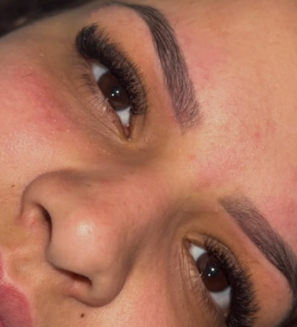

CíliosCílios
Do efeito mais natural ao mais marcante, com fios leves e aplicação que respeita a saúde dos seus cílios.
- Clássico Fio a FioUm fio sintético por cílio natural. Efeito rímel, delicado.
- Volume BrasileiroFios em formato de Y, mais preenchimento com leveza.
- Volume EgípcioFios em W para um olhar cheio e marcante.
- Manutenção e RemoçãoReposição periódica e remoção segura da extensão.